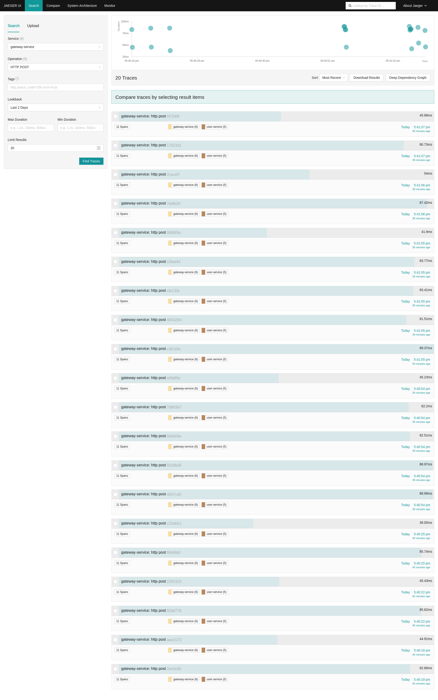
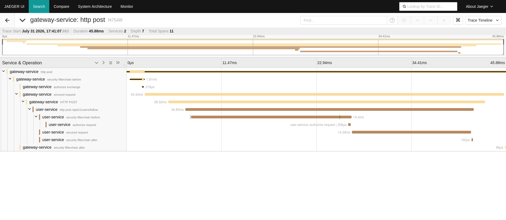

A social network backend built as independent microservices using Spring Boot 3 and Java 21. Services register with Netflix Eureka; all traffic routes through Spring Cloud Gateway with JWT cookie authentication and Redis-backed rate limiting. Users can post, like, follow, and chat in real time — Kafka handles async events between services, STOMP over WebSocket powers live chat and presence tracking. Each service has its own database: PostgreSQL for posts, MySQL for users, MongoDB for chat. Secrets are managed through HashiCorp Vault. Observability stack includes Prometheus with custom metrics, Grafana, and distributed tracing via OpenTelemetry and Jaeger. Covered by unit and integration tests with CI on GitHub Actions.
For more information about database visit here. For more information about architecture visit here.
This repository covers the backend only. The React frontend lives in social-network-react.
| Service | Port | Description |
|---|---|---|
| api-gateway | 8085 | Entry point for all client requests; handles TLS termination, routing, and JWT validation |
| service-discovery | 8761 | Eureka server; all microservices register here for load-balanced routing |
| user-service | dynamic | Manages user registration, login, and follow relationships |
| auth-service | dynamic | Issues and validates JWT tokens; maintains a token blacklist |
| post-service | dynamic | Handles post creation, retrieval, and likes |
| chat-service | 8089 | Real-time messaging backed by MongoDB; fixed port — WebSocket endpoint is routed through the gateway |
| notification-service | dynamic | Consumes Kafka events and pushes real-time notifications over WebSocket |
| PostgreSQL | 5432 | Relational database for post-service |
| MySQL | 3306 | Relational database for user-service |
| MongoDB | 27017 | NoSQL (Document) database for chat-service |
| Redis | 6379 | In-memory key-value store |
| Redis Insight | 8001 | Web UI for inspecting Redis data |
| Kafka | 9092 | Async event bus |
| Vault | 8200 | Secrets management |
| Prometheus | 9090 | Metrics collection (observability stack) |
| Grafana | 3000 | Metrics dashboards (observability stack) |
| Jaeger | 16686 | Distributed tracing UI (observability stack) |
Self-made Grafana dashboard tracking JVM metrics (heap/non-heap memory, GC activity, thread count, open file descriptors) across microservices, recorded while sending live user registration requests through api-gateway to user-service.
k6 spike test against the API Gateway's Redis-backed token bucket rate limiter (10 req/s sustained, burst of 20), watched live in Grafana. Traffic ramps past that budget, triggering 429 responses until the rate drops back under the limit and the bucket recovers.
Traces captured by repeatedly logging in and following another user through the API Gateway.

Search results filtered to Service=gateway-service, Operation=HTTP POST, showing a list of traces that each span both gateway-service and user-service.

Opening one of those traces shows the span nesting from the gateway down into user-service, for a single follow request.
Prerequisites: Java 21, Docker
1. Start infrastructure
cd infrastructure
docker compose up -d
This starts PostgreSQL, MySQL, MongoDB, Kafka, Redis, and Vault.
2. Set required environment variables
Create a .env file at the project root:
# PostgreSQL (post-service)
POSTGRES_USER=<POSTGRES_USER>
POSTGRES_PASSWORD=<POSTGRES_PASSWORD>
POSTGRES_DB=<POSTGRES_DB>
# MySQL (user-service)
MYSQL_USER=<MYSQL_USER>
MYSQL_PASSWORD=<MYSQL_PASSWORD>
MYSQL_DATABASE=<MYSQL_DATABASE>
MYSQL_ROOT_PASSWORD=<MYSQL_ROOT_PASSWORD>
DB=<DB> # must match MYSQL_DATABASE
# MongoDB (chat-service)
MONGODB_HOST=<MONGODB_HOST>
MONGO_USERNAME=<MONGO_USERNAME>
MONGO_PASSWORD=<MONGO_PASSWORD>
MONGO_AUTH=<MONGO_AUTH>
# Vault (post-service, auth-service)
VAULT_TOKEN=<VAULT_TOKEN>
# JWT — auth-service signs, api-gateway validates; use the same base64-encoded secret for HMAC
# JWT_SECRET_KEY and JWT_EXP_TIME are stored in Vault and read from there by auth-service, not env vars
JWT_SECRET_KEY=<JWT_SECRET_KEY>
JWT_KEY=<JWT_KEY>
JWT_EXP_TIME=<JWT_EXP_TIME>
# TLS — must match the password of the PKCS12 keystore used by api-gateway
KEY_STORE_PASSWORD=<KEY_STORE_PASSWORD>
WEBCLIENTJKS_KEY=<WEBCLIENTJKS_KEY>
# Service discovery — hostname only, port is appended automatically
SERVICE_DISCOVERY_HOST=<SERVICE_DISCOVERY_HOST>
# Frontend
FRONTEND_ORIGIN=<FRONTEND_ORIGIN>
3. Seed secrets into Vault
./infrastructure/vault/seed.sh
Writes the DB credentials, JWT secret, and Sentry DSN into secret/post-service and secret/auth-service. Required before starting those two services — both fail to start without their secrets present in Vault.
4. Start services in order
Make sure environment variables are exported before starting services — see Encountered problems section.
# 1 — service registry must be first
cd service-discovery && ./gradlew bootRun
# 2 — backend services (any order)
cd user-service && ./gradlew bootRun
cd auth-service && ./gradlew bootRun
cd post-service && ./gradlew bootRun
cd chat-service && ./gradlew bootRun
cd notification-service && ./gradlew bootRun
# 3 — gateway last
cd api-gateway && ./gradlew bootRun
5. (Optional) Start observability stack
cd infrastructure/observability
docker compose up -d # Prometheus :9090, Grafana :3000
See docs/observability.md for what's actually collected — custom metrics, dashboards, and tracing setup.
All requests are routed through the API Gateway. Authentication is cookie-based — the client never handles the JWT directly.
Flow:
POST /api/v1/users/register with username, password, and confirmPassword. No authentication required.POST /api/v1/users/login with username and password. On success the gateway sets an HttpOnly, Secure, SameSite=None cookie named token containing a signed JWT. The cookie is valid for 1 hour.token cookie. The API Gateway's AuthFilter intercepts every request, reads the cookie, and calls the auth-service to validate the token (checking signature, expiry, and the blacklist stored in Redis). If the token is missing or invalid the gateway immediately returns 401 Unauthorized without forwarding the request downstream.POST /api/v1/tokens/issue on auth-service through the gateway. Auth-service signs the JWT with JWT_SECRET_KEY using HMAC-SHA256 and returns it to user-service, which sets it as the response cookie.POST /api/v1/tokens/invalidate. Blacklisted tokens are stored in Redis and rejected by auth-service on every subsequent validation request even if the JWT has not yet expired.Public endpoints (no token required):
POST /api/v1/users/register Register a new user
POST /api/v1/users/login Login and receive token cookie
POST /api/v1/tokens/** Token operations (issue, validate, invalidate, is-invalidated)
All other endpoints require a valid token cookie.
Unit tests — no infrastructure required:
# From any service directory
./gradlew test --tests "**.*UTest"
Integration tests — require PostgreSQL and Redis running. Before running post-service integration tests, create the test database:
docker exec <postgres-container> psql -U $POSTGRES_USER -c "CREATE DATABASE posts_test;"
Then run from the service directory:
./gradlew test --tests "**.*ITTest"
Integration tests use a dedicated database (posts_test) to avoid touching the main database. Each test rolls back its writes via @Transactional so tests don't affect each other.
Performance tests — K6 scripts in k6/, run via the grafana/k6 Docker image against an already-running stack. In local development services run directly on the host via ./gradlew bootRun (not in Docker), so the k6 container needs --network host to reach them at localhost; if the stack is deployed in Docker instead, drop --network host and point BASE_URL at the containers' network:
docker run --rm --network host -v $(pwd)/k6:/scripts grafana/k6 run /scripts/<script>.js
Each service has a dedicated GitHub Actions workflow that triggers on push and pull request to main and dev when files within that service's directory change.
Each workflow has two jobs:
build — delegates to .github/workflows/_gradle-build.yml, runs on ubuntu-latest with Java 21 (Temurin):
./gradlew test --tests "**.*UTest"
The *UTest filter excludes Spring context load tests and integration tests that need a running database or Kafka.
publish — runs only on direct push to main, after build passes. Delegates to .github/workflows/_docker-publish.yml, which builds the service's Docker image and pushes it to DockerHub with two tags:
<username>/social-network-<service>:latest<username>/social-network-<service>:<git-sha>Requires DOCKERHUB_USERNAME and DOCKERHUB_TOKEN repository secrets.
For the full pipeline breakdown see docs/ci-cd.md. For the git workflow behind it — branch naming, commit format, when dev gets PR'd into main — see docs/branching.md.
Authorization header, so the React SPA never handles the JWT directlyProblem: ClassCastException exception when caching posts. Solution: disable spring-boot-devtools dependency.
Problem: When implement UserDetailsService as lambda or in UserDetails service there is circular dependency when used in OncePerRequestFilter. Solution: Implement UserDetailsService as Bean in separate class.
Problem: When use HandlerExceptionResolver in OncePerRequestFilter there is circular dependency. Solution: Use field injection with @Lazy annotation. (Temporary fix)
Problem: CORS - duplicated Access-Control-Allow-Origin in response headers. Solution: Add DedupeResponseHeader in API Gateway's default-filters property.
Problem: When caching entity that contains LAZY loaded collection gives "failed to lazily initialize a collection of role: ... could not initialize proxy - no Session". Solution: Make Lazy loaded collection in Post entity as eagerly loaded.
Problem: When build image in docker-compose.yaml give "ERROR: unable to prepare context: path "[Dockerfile-directory]/Dockerfile" not found". Solution: In docker-compose.yaml build attribute for service must contain [Dockerfile-directory] only.
Problem: Eureka service discovery with docker when try to communicate with API Gateway microservice give following error: "Could not create URI object: Illegal character in hostname at index 14: http://service_disc:8761/eureka/apps/GATEWAY-SERVICE". Solution: Service name must not contain "-" character.
Problem: Handling exceptions globally in CustomErrorWebExceptionHandler class return response without body. Solution: Add getters and setters for the class returned in response body.
Problem: When using WebClient to make requests to service that use self-signed certificate gives "PKIX path building failed: unable to find valid certification path to requested target". Solution: Configuring WebClient with a custom Truststore.
Problem: During integration test with H2 in-memory database get "h2 could not prepare statement [table "user" not found]".
Solution: Use spring.jpa.database-platform=org.hibernate.dialect.H2Dialect instead of spring.jpa.database-platform=org.hibernate.dialect.MySQL8Dialect in properties.yaml used for testing and use @Table(name="user") in User entity.
Problem: Environment variables from .env are not visible to services started with ./gradlew bootRun — Spring fails to resolve placeholders like ${KEY_STORE_PASSWORD}.
Solution: Source the .env file with set -a so all variables are automatically exported to child processes: set -a && source .env && set +a.
Problem: Individual services (e.g. user-service) return 403 on requests forwarded by the API Gateway due to hardcoded CORS origin restrictions in their own SecurityConfig.
Solution: Disable CORS in individual service security configs (.cors(c -> c.disable())). Services sit behind the gateway and never receive direct browser requests, so CORS enforcement belongs exclusively to the gateway.
Problem: CORS preflight (OPTIONS) requests to the API Gateway return 403 with Access-Control-Allow-Origin header missing.
Solution: Define an explicit CorsConfigurationSource bean in SecurityConfig. Without it, Spring Security's .cors(Customizer.withDefaults()) has nothing to bind its CorsWebFilter to, so preflight requests fall through to the router and get forwarded downstream without CORS headers. Also, add an OPTIONS method check at the top of AuthFilter to skip token validation for preflight requests — browsers send OPTIONS without cookies, so without this check preflights on protected routes are rejected with 401 before CORS headers can be added.
Problem: After a service restart, GET /api/v1/users returns 400 with "Unrecognized field 'enabled'" when the response is served from Redis cache.
Solution: Add @JsonIgnore to all UserDetails interface methods (isEnabled, isAccountNonExpired, isAccountNonLocked, isCredentialsNonExpired, getAuthorities) in the User entity. These methods are serialized by Jackson as fields when caching but have no corresponding setters to deserialize back into, causing the mismatch. Adding setters would also fix deserialization but is the wrong approach — these are Spring Security interface methods that do not belong to the domain model, so caching them is redundant. @JsonIgnore prevents them from being cached at all.
Problem: Frontend cannot read 401 responses from the API Gateway on cross-origin requests — the browser blocks the response even though the status code is returned correctly.
Solution: Add Access-Control-Allow-Origin and Access-Control-Allow-Credentials CORS headers to 401 responses in AuthFilter. Any cross-origin request sent with credentials (cookies, Authorization header) requires these headers on every response, including error responses, for the browser to expose them to frontend JavaScript.